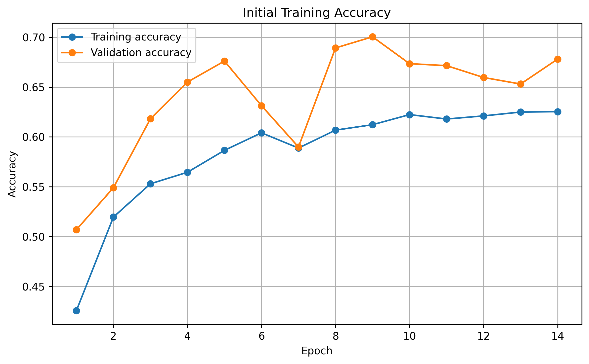
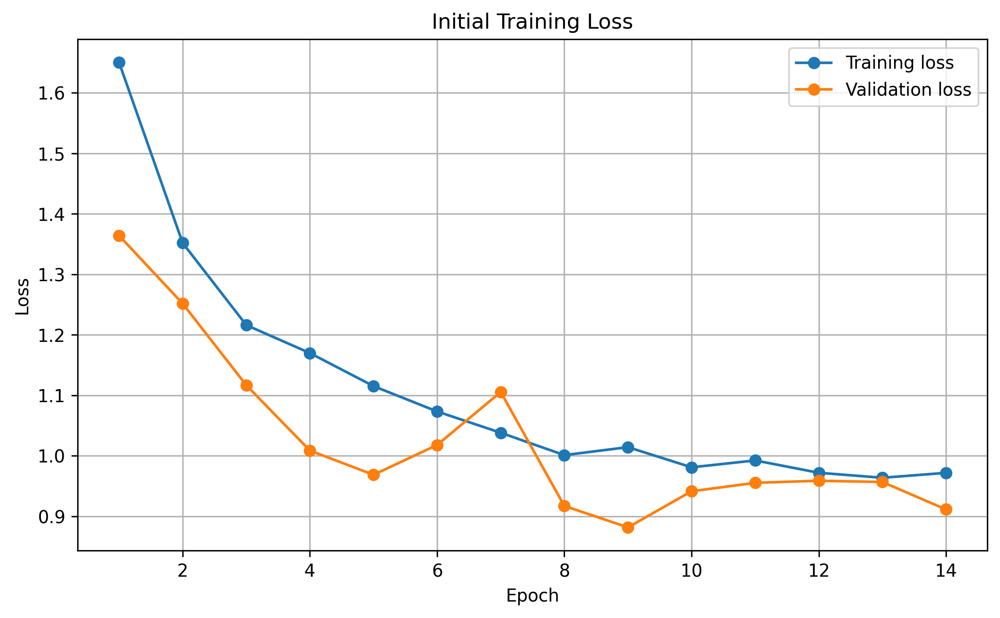
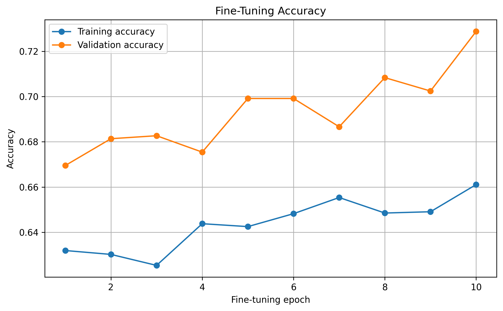
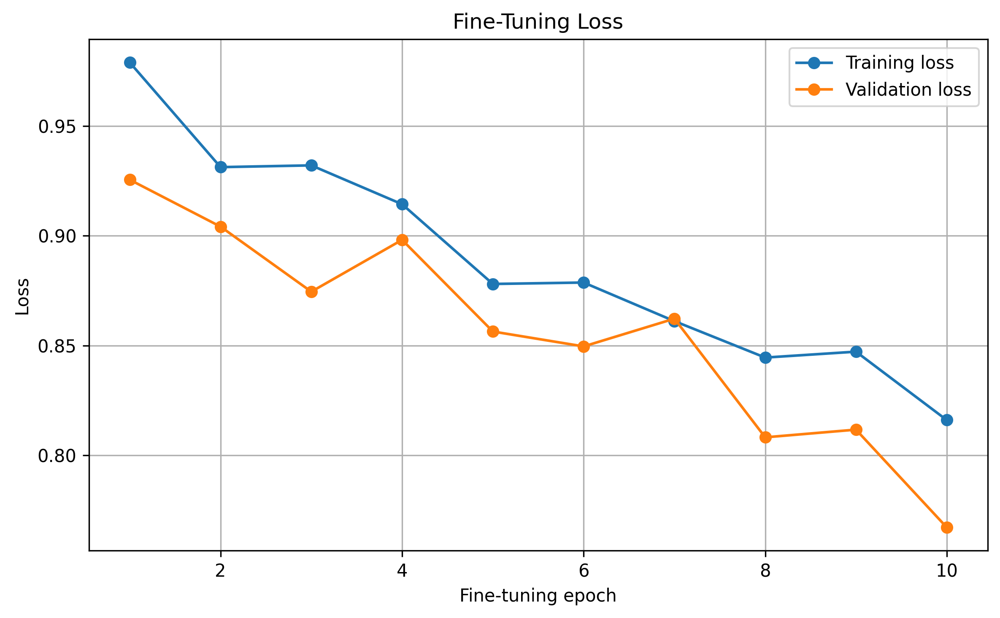
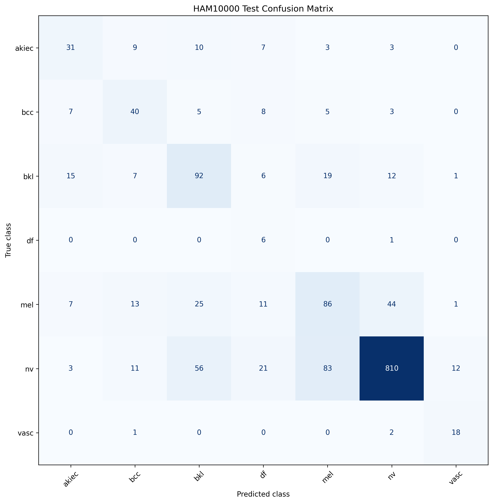
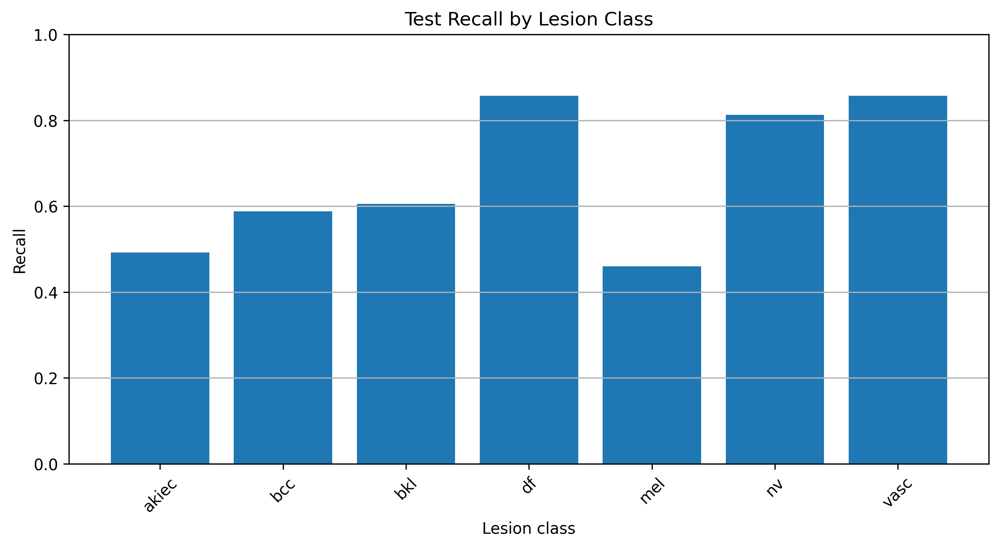
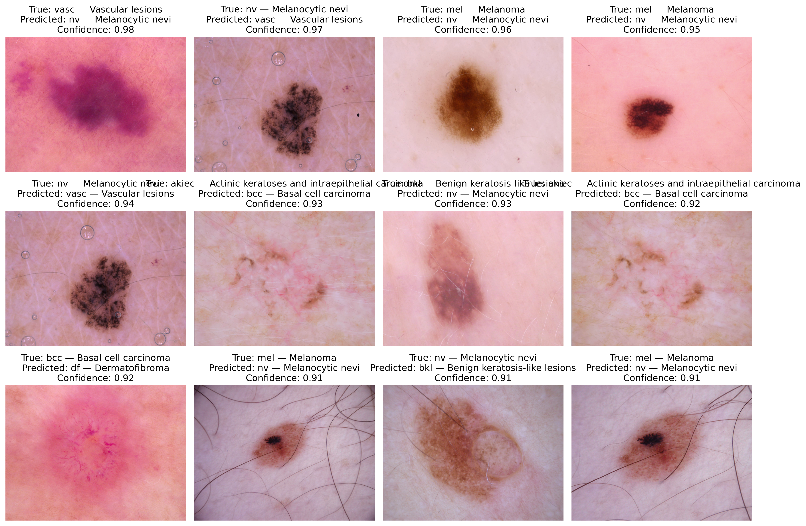

Overview
Project Overview
This project applies EfficientNetB0 transfer learning to dermoscopic images from the HAM10000 dataset. The model predicts seven skin-lesion categories.
The workflow includes metadata validation, image-path mapping, lesion-grouped dataset splitting, TensorFlow data pipelines, augmentation, class weighting, initial training, fine-tuning, evaluation, and high-confidence error analysis.
Research focus: evaluating an imbalanced medical-image classifier while preventing images of the same lesion from appearing in multiple dataset splits.
Data
Dataset Split
Images were split by lesion ID to reduce data leakage between the training, validation, and testing sets.
Evaluation
Final Model Results
These results demonstrate the difficulty of imbalanced, multiclass medical-image classification. They do not represent clinically validated performance.
Training
Initial Training


Fine-Tuning
Fine-Tuning Performance


Evaluation
Confusion Matrix

Class Performance
Recall by Lesion Class

Error Analysis
High-Confidence Incorrect Predictions

Reviewing confident mistakes helps identify class confusion, dataset limitations, and areas for future improvement.
Methods
Tools and Techniques
Data preparation
Metadata validation, image mapping, resizing, batching, and lesion-grouped splitting.
Model training
Transfer learning, class weighting, augmentation, early stopping, and fine-tuning.
Evaluation
Accuracy, balanced accuracy, F1, ROC-AUC, confusion matrices, recall, and error analysis.
Limitations
Important Limitations
- The HAM10000 dataset is highly imbalanced.
- Performance varies among lesion categories.
- The model can make high-confidence mistakes.
- Results may not generalize beyond HAM10000.
- The model does not use patient history or clinical context.
- The model has not undergone clinical validation.
Safety
Educational Disclaimer
This project is an educational machine-learning experiment. It does not provide medical advice, diagnosis, screening, treatment recommendations, or emergency guidance.
Creator
About the Author
Created by Shashank Padala, a high-school student interested in artificial intelligence, computer vision, biomedical engineering, medicine, and software engineering.